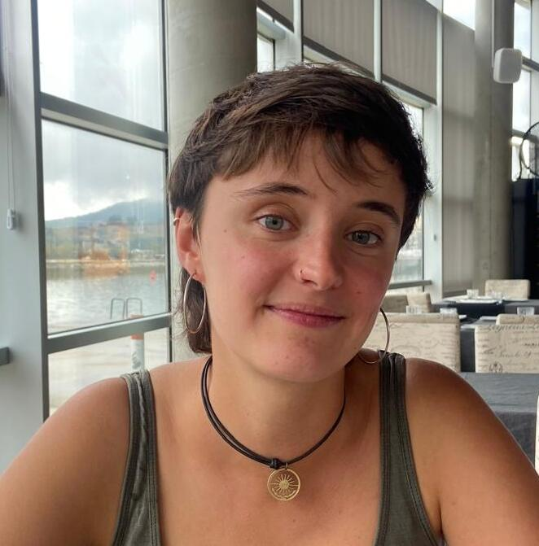

About

Hello, my name is Raquel Melgar. I am a third year PhD student at LaBRI in Bordeaux under the supervision of Jean-Christophe Aval. I am interested in an algebraic approach to combinatorics and my main research interests are the following:
- Symmetric and quasisymmetric functions
- Combinatorial Hopf algebras
- Signed graph coloring and its relation with hyperplane arrangements
- Numerical semigroups
Talks and conferences
Places where you might have seen me talking:
-
Jagtcombalg2026 : Journées annuelles du GT CombAlg, Calais (France), June 2026.
Talk: "On the combinatorial Hopf algebra of signed graphs" (Slides). -
7th GSMAAC: Graduate Student Meeting in Applied Algebra and Combinatorics, Bristol (UK), April 2026.
Talk: "On the combinatorial Hopf algebra of signed graphs" -
Journées de Combinatoire de Bordeaux, Bordeaux (France), February 2026.
Talk: "Chromatic quasisymmetric functions for signed graphs" -
XXI Spanish Meeting on Computational Geometry, Santander (Spain), June 2025.
Talk: "Chromatic quasisymmetric functions for signed graphs" (Slides) -
Combinatorics and Interactions seminar at LaBRI, Bordeaux (France), June 2025.
Talk: "Chromatic quasisymmetric functions for signed graphs" (Slides) -
Open Day of the Doctoral School for Mathematics and Computer Science, Bordeaux (France), April 2025.
Poster: "Algebraic invariants associated to graph coloring" (Poster) -
JNIFM2025: Journées Nationales du GDR IFM, Bordeaux (France), March 2025.
Poster: "Algebraic invariants associated to graph coloring" (Poster) -
RSME's VII Congress of Young Researchers, Bilbao (Spain), January 2025.
Talk: "Algebraic invariants associated to graph coloring" (Slides) -
XVIII Annual Young Forester Researchers Meeting, Palencia (Spain), January 2024.
Talk: "A voxel-based ray tracing model to simulate sunlight captured by trees" (Recording, Slides)
Research
Publications and preprints
-
J.C. Aval, R. Melgar,
On the combinatorial Hopf algebra of signed graphs.
In preparation. -
J.C. Aval, R. Melgar,
Chromatic quasisymmetric functions for signed graphs.
Submitted. -
A. Campillo López, R. Melgar,
Poincaré series of semigroups.
To appear in Contemporary Mathematics Proceedings, Volume 115AM: Algebraic and topological interplay of algebraic varieties. -
A. Campillo López, R. Melgar,
Analytic expansions and Poincaré series.
Ann. Polon. Math. 135 (2025), 79–103.
Theses
- La expresión exponencial de las funciones generatrices y su combinatoria, Master thesis directed by Antonio Campillo, Universidad de Valladolid.
Manuscript (in Spanish) - Poliedros y conjuntos convexos. Una generalización del volumen, Bachelor thesis directed by Antonio Campillo, Universidad de Valladolid.
Manuscript (in Spanish)
Contact
Here you can find my cv and you can contact me at raquel.melgar[at]labri[dot]fr .